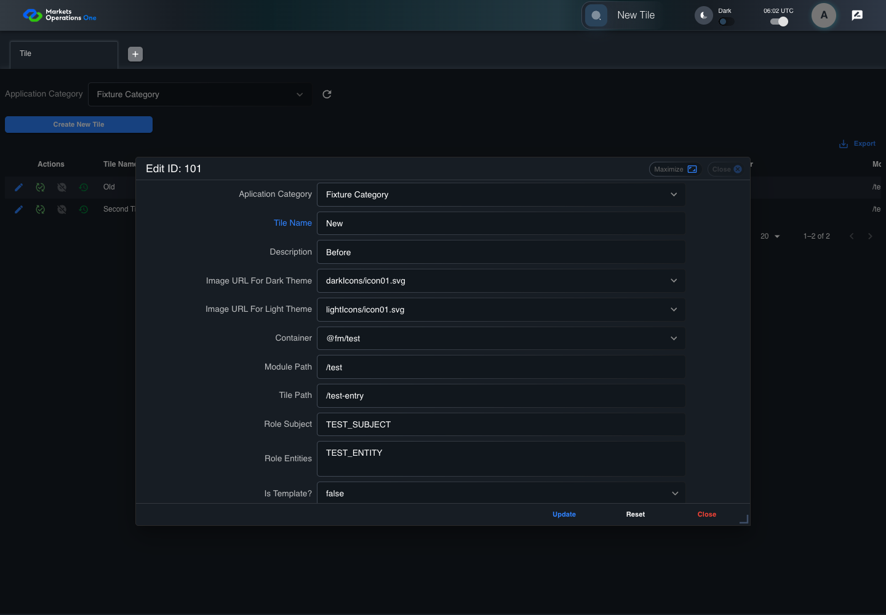
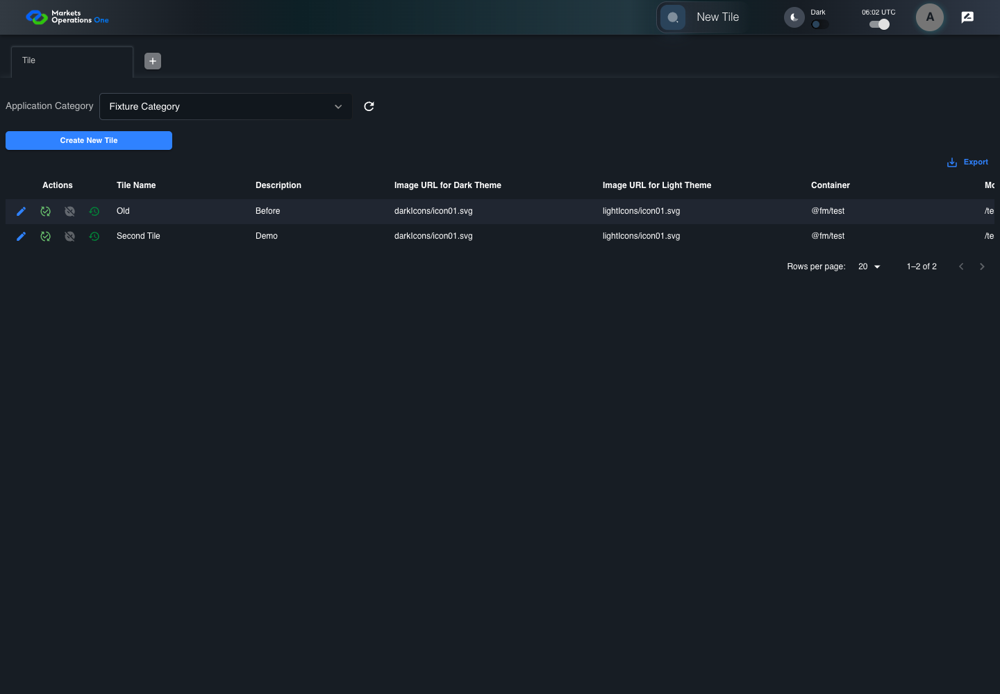

UX-056 administration boundary with step screenshots
PASS · application/run-050/ux-056-administration-boundary-with-step-screenshots-24959110ab93-attempt-1 · ACTUAL_APPLICATION_LOCAL_SERVICES
Actual React administration screens. Controlled browser credentials, role, records, and BFF responses. Save probes persist the received UI payload without replacing it with expected values. Declared clock emulation controls field timers. Proposed accessibility and source-risk expectations remain separate from business approval.
2026-10-22T06:02:18.028Z to 2026-10-22T06:02:24.076Z
Assertions and result · Artifact manifest · Exact run inputs and source hashes
Result SHA-256:6a9e2fabedc91f60a8c720170a477771303f508e257876a0e6cc7507d55a726bScreenshot capture: CAPTURED. Named frames: 8.
Step screenshot bindings: COMPLETE. 7/7 canonical steps have execution screenshots.
Bindings measure structural coverage only. They do not establish screenshot content quality or relevance.
Screenshot content review: NOT_REVIEWED. Recorded context: 0/8 frames. Identical image bytes: 0 repeated frames. Recorded context does not establish human visual review.
Canonical step timeline
Given ADMIN-A has T1 record101 loaded with persisted name "Old"; T2 record102 has name "Second Tile"
Execution: PASSED.1. step-01 Visible state after step 1: Given ADMIN-A has T1 record101 loaded with persisted name "Old"; T2 record102 has name "Second Tile"
2026-10-22T06:02:21.170Z · 1440×1000
Step: /Users/lushevol/code/github/ratan-release-impact/workbench/tasks/ui-test-coverage-20261022/test-cases.md:14065
SHA-256:97c7d7ce3c7cc98008f1296a46790f9d5fbe3f044843c8562f26a4cd961df56fWhen ADMIN-A types "New" as the replacement value in the textbox labelled "Tile Name" in the dialog with title text "edit ID: 101" on the administration page
Execution: PASSED.
2. step-02 Visible state after step 2: When ADMIN-A types "New" as the replacement value in the textbox labelled "Tile Name" in the dialog with title text "edit ID: 101" on the administration page
2026-10-22T06:02:21.393Z · 1440×1000
Step: /Users/lushevol/code/github/ratan-release-impact/workbench/tasks/ui-test-coverage-20261022/test-cases.md:14066
SHA-256:9d1c18df4afb373275b735c969d6a263de9e3f4121b8ecb3b2c1702f848c50ceAnd The controlled event loop advances 100 milliseconds from the final input event
Execution: PASSED.3. step-03 Visible state after step 3: And The controlled event loop advances 100 milliseconds from the final input event
2026-10-22T06:02:21.496Z · 1440×1000
Step: /Users/lushevol/code/github/ratan-release-impact/workbench/tasks/ui-test-coverage-20261022/test-cases.md:14067
SHA-256:52d64427aad6355754268991ee7ac73caca2c6fd43e8aa05351da8645976b346And ADMIN-A clicks the button labelled "Close" in the footer of the dialog with title text "edit ID: 101" on the administration page
Execution: PASSED.
4. step-04 Visible state after step 4: And ADMIN-A clicks the button labelled "Close" in the footer of the dialog with title text "edit ID: 101" on the administration page
2026-10-22T06:02:21.634Z · 1440×1000
Step: /Users/lushevol/code/github/ratan-release-impact/workbench/tasks/ui-test-coverage-20261022/test-cases.md:14068
SHA-256:3ef6078e6b9420cd9a3d78b07a5137c2ee6d2238ad1bc6394f1d1d36a317915cAnd ADMIN-A clicks the button labelled "Edit" in the Tile grid row with "Record Id" equal to "102" on the administration page
Execution: PASSED.5. step-05 Visible state after step 5: And ADMIN-A clicks the button labelled "Edit" in the Tile grid row with "Record Id" equal to "102" on the administration page
2026-10-22T06:02:21.995Z · 1440×1000
Step: /Users/lushevol/code/github/ratan-release-impact/workbench/tasks/ui-test-coverage-20261022/test-cases.md:14069
SHA-256:9b1da8a40afe4aeca8c8e571667e621afcaf323f2cd3a98547e1252e91d147f0And The controlled event loop completes every pending T1 field callback
Execution: PASSED.6. step-06 Visible state after step 6: And The controlled event loop completes every pending T1 field callback
2026-10-22T06:02:23.134Z · 1440×1000
Step: /Users/lushevol/code/github/ratan-release-impact/workbench/tasks/ui-test-coverage-20261022/test-cases.md:14070
SHA-256:22f34ef5bd445d7301e831aed2ea0c9879702b7ebb278c8d1b22bbc95432958fThen The textbox labelled "Tile Name" in the dialog with title text "edit ID: 102" on the administration page has value equal to "Second Tile"
Execution: PASSED.7. step-07 Visible state after step 7: Then The textbox labelled "Tile Name" in the dialog with title text "edit ID: 102" on the administration page has value equal to "Second Tile"
2026-10-22T06:02:23.244Z · 1440×1000
Step: /Users/lushevol/code/github/ratan-release-impact/workbench/tasks/ui-test-coverage-20261022/test-cases.md:14071
SHA-256:d344132b0a3377b4650b18a101e0dd606b893da155fe0367d98f03d4b748f6ca


Additional named frames

Screenshots establish visible state only. Assertions and traces support functional claims.